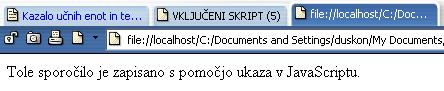

Lenuh ni le tisti, ki ne dela, paè pa tudi tisti, ki bi lahko delal veè. (Sokrat)
Slika 1 in 2: Skript v glavi - koda in videz spletne strani
 Slika 3 in 4: Skript v telesu - koda in videz spletne strani 1. Izdelaj spletno stran, ki bo izgledala tako, kot kažeta sliki 1 in 2. Datoteko poimenuj "05apriimek.html". Ne pozabi na konènico ".html". 2. Izdelaj spletno stran, ki bo izgledala tako, kot kažeta sliki 3 in 4. Datoteko poimenuj "05bpriimek.html". Ne pozabi na konènico ".html". POZOR: Najprej NATANÈNO izdelaj vajo v tej uèni enoti in jo pokaži profesorju, nato zapiši odgovore na spodnja vprašanja. 3. V kodo primera v tej uèni enoti vstavi spodaj navedene komentarje na ustrezna mesta, ki jih ti komentarji pojasnjujejo. //Klic funkcije "opozorilno okno". //Funkcija, ki ustvari opozorilno okno na spletni strani. //Znaèka za konec skripta. //Zapisovanje funkcije, ki ustvari opozorilno okno na spletni strani. //Znaèka za zaèetek skripta. 4. Kodo primera v tej uèni enoti spremeni tako, da bo sporoèilo v opozorilnem oknu tako: "Tole opozorilno okno je vstavljeno v glavo dokumenta, zato se to okno odpre takoj ob odpiranju te spletne strani." 1. Vprašanja za usmerjanje pozornosti in usvajanje novih besed: 1. V katerih dveh primerih se zaène izvajati JavaScript? 2. Kateri dogodek, ki sproži uporabnik, je omenjen v besedilu uène enote? 3. Kam vkljuèimo JavaScript, èe želimo, da se izvede samodejno ob odpiranju strani v brskalniku? 2. Zapiši od ene do pet kljuènih besed, ki povzemajo vsebino te uène enote. 3. Vprašanja za razmislek in povezovanje z lastno izkušnjo: 1. Kam je vkljuèen JavaScript v primeru na slikah 1 in 2; v glavo ali v telo HTML dokumenta? 2. V katerem delu dokumenta poklièemo oziroma sprožimo funkcijo JavaScripta v primeru na slikah 1 in 2; v glavi ali v telesu? 3. Katero funkcijo JavaScripta smo uporabili v primeru na slikah 1 in 2? 4. Katera funkcija JavaScripta služi za vnos sporoèila v opozorilno okno v primeru na slikah 1 in 2? 5. Zapiši sporoèilo, ki smo ga vpisali v opozorilno okno v primeru na slikah 1 in 2! 6. Kateri dogodek sproži odpiranje opozorilnega okna v primeru na slikah 1 in 2? 7. V katerem delu dokumenta smo torej opisali funkcijo v primeru na slikah 1 in 2? 8. V katerem delu dokumenta smo torej poklicali funkcijo v primeru na slikah 1 in 2? 9. V katerem delu dokumenta smo opisali in tudi poklicali funkcijo v primeru na slikah 3 in 4? 4. Domaèa naloga: 1. V zvezek prepiši misel, ki je zapisana na zaèetku uène enote z rdeèimi èrkami. Zabeleži nekaj lastnih misli, ki se ti utrnejo ob razmišljanju o njej. 2. Odgovori na vprašanja, na katere nisi uspel/a odgovoriti v šoli. 5. DODATNO DELO: 1. Izdelaj spletno stran, ki bo izgledala tako, kot kažeta sliki 1 in 2. Spremeni le vsebino opozorilnega okna. V opozorilnem oknu naj bosta zapisana tvoj priimek in ime, sledita naj jima šolsko leto ter oznaka razreda. Datoteko poimenuj "05cpriimek.html". Ne pozabi na konènico ".html". 2. Izdelaj spletno stran, ki bo izgledala tako, kot kažeta sliki 3 in 4. Datoteko poimenuj "05dpriimek.html". Spremeni pa besedilo spletne strani. Na spletni strani naj bosta zapisana tvoj priimek in ime, sledita naj jima šolsko leto ter oznaka razreda. Ne pozabi na konènico ".html". |